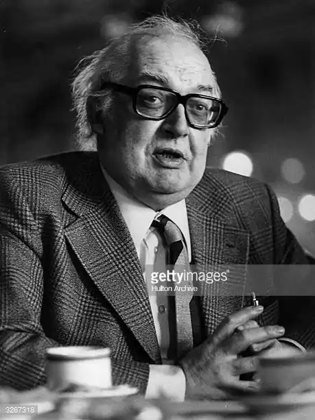
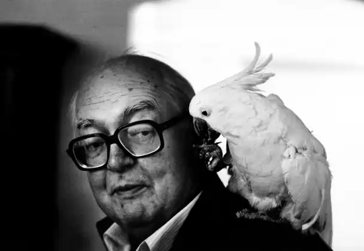

Фрідріх Дю́рренматт (нім. Friedrich Dürrenmatt) — видатний швейцарський прозаїк-романіст, публіцист, драматург і художник-експресіоніст. Один з майстрів психологічного детективу. Його романи і новели, філософські притчі та п'єси сповнені гротеску й фантастики. Вся творчість Дюрренматта пронизана, з одного боку, парадоксами в дусі абсурду і "чорного гумору", а з другого — вистражданими глибокими роздумами про двоїстість прогресу, про антигуманне сьогодення і ще більш кошмарне майбутнє людської цивілізації. Його твори не дають однозначних відповідей на одвічні питання, але змушують замислюватися про найголовніше.
Дюрренматт народився 5 січня 1921 року в сім'ї протестантського пастора у містечку Конольфінген (кантон Берн). В 1935 році батьки перебрались в Берн. Фрідріх здобув освіту в Цюрихському та Бернському університетах, де вивчав філософію й теологію, філологічні та природничі науки, займався живописом.
Літературний дебют Дюрренматта відбувся в роки Другої світової війни. З 1947 р. він — професійний письменник і драматург (писав німецькою мовою). До речі, за всю історію Швейцарії лише двох її письменників годувало перо. Це Макс Фріш та Фрідріх Дюрренматт. Чи то було випадковістю, що Дюрренматту так поталанило саме у другій половині XX сторіччя? Спочатку він зажив слави не на батьківщині, а за її межами. Але, на відміну від Руссо й Констана, назавжди залишився швейцарцем. Навіть став всесвітньовідомим саме через своє швейцарське єство, через виплекану століттями нейтралітету поблажливо-іронічну ментальність. Захищаючись від звинувачення, ніби він не розуміє теперішнього життя, бо не був солдатом світової війни, Дюрренматт писав: "В наш час бачити світ можна лише з точок, розташованих по той бік Місяця". У 1946 р. Дюрренматт одружується на акторці Лотті Гайслер і вони переїжджають до Лігерца на озері Білер. У 1952 р. родина Дюрренматтів надовго оселилася в Невшателі. Його перші п'єси "Адже сказано…" та "Сліпий" (написано 1947 p.) зорієнтовано на філософське осмислення протистояння абстрактних ідей і життєвої правди. У 1950-ті роки Дюрренматт створив низку кримінальних романів ("Суддя та його кат", "Обіцянка" та ін.), що здобули йому славу майстра детективного жанру. Утім, кримінальну інтригу містять майже всі твори письменника. Однак, захопливі інтриги, аналітично точно й психологічно достеменно вибудовані розслідування та всі інші обов'язкові аксесуари жанру Дюрренматт підпорядковує не розважальності, а прагненню докопатися до таємниці, глибинних причин і наслідків. Разом зі своїми детективами Барлахом і Матеї письменник шукає не стільки злочинця, скільки значення й прихований механізм ситуації, яку провокує, переважно, несподіваний та неймовірний випадок. Цей твір належить сьогодні до обов'язкових для прочитання в німецьких школах. Всесильна гра випадку править всесвітом і уявляється Дюрренматтові закономірністю життя. Випадок, розвага, гра становлять головну колізію новели "Аварія" (1956). Дюрренматт — іронічний і серйозний водночас. Віддаючи безумовну перевагу жанрові комедії, він писав: "Лише в драматичній формі комедії можна втілити сьогоднішню трагедію". П'єсі "Візит старої дами" (1956) Дюрренматт дав жанрове визначення "трагічної комедії". Визнана одним з ліпших творів драматурга, вона є своєрідним підсумком спостережень письменника над суспільною психологією. Увага драматурга зосереджується на реакціях і вчинках, які лише позірно можуть здатися незвичайними чи неймовірними: неправдоподібність у Дюрренматта — гіпербола правдоподібності. Гротеск, фантастика, парадокси п'єси "Візит старої дами" й інших комедій лише підкреслюють буденність зла, зиску, безчестя, на які легко піддається людина. Правда в п'єсі жорстока й нещадна, однак лише таким може бути дієве попередження людству, що забуває про справедливість. У багатьох творах — популярної п'єсі-притчі про моральну відповідальність науки "Фізики" [Die Physiker] (1962; рос. 1969) та інших — Дюрренматт впритул наближається до тематики НФ. "Нейтральний" Дюрренматт, що відмовляється давати остаточні формулювання, все ж попереджує й вимагає — не в риторичних висловлюваннях, а всім ладом своєї творчості. Саме так сприймається комедія "Фізики" (яка обійшла сцени багатьох країн світу). Дія п'єси скріплюється детективним сюжетом — трикратним убивством медсестер психіатричної клініки пацієнтами-фізиками "Ейнштейном", "Ньютоном" та Мебіусом. Божевілля Мебіуса — маска, яку він одягає, усвідомивши згубні для людства наслідки своїх відкриттів. "Або ми залишимося в божевільні, або збожеволіє світ. Або ми назавжди зникнемо з пам'яті людства, або зникне саме людство". І все ж "Фізики" — це фарс, що вривається у трагедію. Клініка, де мав надію сховатися Мебіус, виявляється частиною могутнього концерну, а доктор Цанд, яка його очолює, володіє всіма науковими працями фізика. В її руках — доля не лише самого Мебіуса, а й усього людства. У тезах до п'єси Дюрренматт писав: "Будь-яка спроба одинака вирішити для себе те, що стосується всіх, приречена на крах", — чи не тому й трагедія обертається фарсом? Чи не тому "Фізики", за визначенням драматурга, — "пародія на трагедію"? Так у сферу пародії потрапив і "трагічний жест" Мебіуса. У перші повоєнні роки могло видатися, ніби цьому схильному до блазенства авторові "Ромула Великого", "Фізиків", "Візиту старої пані" просто пощастило: Німеччина була зруйнована як матеріально, так і духовно, та оскільки святе місце порожнім не буває, ці двоє швейцарців заполонили німецький театр. Але з часом ставало усе ясніше, що "швейцарський загарбник" не лише глузував з заідеологізованого фанатизму переможних і переможених великих держав другої світової війни, а й з майбутньої долі повоєнного світу, що поспішив розколотися на два ворожі табори. "Шиллерова драма, — читаємо у Дюрренматтових "Проблемах театру", — так само, як і грецька трагедія, були можливі тому, що мали справу із світом видимим, із справжніми діячами держав. У мистецтві можна зобразити лише те, що можна збагнути. А сучасна держава чуттєво незбагненна, анонімна, бюрократична... Сучасний світ легше відтворити через маленького спекулянта, канцеляриста, поліціянта або через бундесрат і бундесканцлера... Держава втратила свій образ... Сили сьогоднішнього світу, слід гадати, відтворюються тільки там, де вони вибухають". Отже Дюрренматт і справді сприймає навколишній світ у тій подвійній перспективі, яка виникає у "стороннього" певною мірою спостерігача і недоступна акторові всесвітнього вертепу. Якщо хочете, те, що сказав того часу Дюрренматт, є передбаченням, свого роду пророцтвом, яке навряд хто (навіть він сам) міг цілком збагнути у 50-60-ті рр. Сьогодні мимоволі дивуєшся несамовитій точності Дюрренматтового присуду. Очікувана трагедія тотальної війни обернулася позбавленою смаку "комедією перемоги". Всі ми сьогодні переможені, бо опинилися у постапокаліптичному світі, так і не переживши самого Апокаліпсису. Все це Дюрренматт і справді передчував: "Розпад нашого століття, що витанцьовує останній танець білої раси, — писав він багато років тому, — не знає ні винних, ні відповідальних. Ніхто цьому не допомагав і ніхто цього не хотів... Це наше нещастя, а не вина: вина існує ще як індивідуальний вчинок, як релігійний вибір. Сьогодні нам пасує лише комедія. Наш світ достеменно так прийшов до гротеску, як і до атомної бомби..." Ці слова могли б правити за епіграф чи не до кожного Дюрренматтового твору. І засоби фантастики допомагали Дюрренматту зображувати нашу ірреальну реальність. Без всяких застережень до НФ належать: радіоп'єса "Операція" Вега "[Das Unternehmen der Wega] (1964; рос. 1966), в якій Венера перетворена на місце утримання злочинців із Землі та апокаліптична повість" Зимова війна в Тибеті "(1981 ; рос. 1990). "Історія додумана до кінця, коли вона набуває найгіршого з усіх можливих повороту", — вважає Дюрренматт. Такою "додуманою" до післяядерної реальності історією майже повністю знищеного людства і є фантастична повість "Зимова війна в Тибеті", у якій письменник створив апокаліптичну картину майбутнього. Один з останніх творів Дюрренматта — новела "Доручення, чи Про спостереження за тим, хто спостерігає за спостерігачами" (1986) — доповнює це апокаліптичне полотно. Гранично чітка, "класична" побудова новели (вона складається з 24 розділів-речень) контрастно підкреслює хаос життя й незворотну руйнацію причиново-наслідкових зв'язків. Слідом за данським філософом С. К'єркегором, якого цитує в епіграфі до новели, Дюрренматт запитує: "Що гряде? Чим обернеться майбутнє? Я не знаю цього, не маю з цього приводу жодних передчуттів…" Новела написана в експериментальному стилі повість-притча про військовий полігон, на якому постійно випробовують якусь зброю. Це похмура абсурдистська фреска на тему світу після катастрофи (ядерної війни), в якому "стратеги", що вижили в своїх бункерах, продовжують абсурдні війни з уже знищеними підданими. До фантастики слід також зарахувати оповідання "Тунель" (1952), "Відомості про стан друку у кам'яному віці" (1949; рос. 1990) і "Мінотавр" (1985; укр. 1994). За Дюрренматтом, людина — лише "жертва поточних світоглядів", а світові події — надто грандіозні, щоб вона могла брати участь у їх вирішенні. Такий філософський смисл алегорії, поданої в оповіданні "Тунель": його героєві — опасистому молодикові, що подорожує залізницею, — не вдалося ані відгородитися від світу, одягнувши окуляри і заткнувши вуха ватою, ані втрутитися в життя, зупинивши некерований поїзд, що мчить у безодню. Такий філософський смисл і алегорії, поданої в притчі "Мінотавр", де йдеться про героя давньогрецьких міфів — невимовно жахливу потвору, напівлюдину-напівбика, що вбиває й жере свої жертви. І в Дюрренматта він не виглядає кращим, але, сказати б, невиннішим, бо є і катом і жертвою водночас. Цей Мінотавр — персонаж гротескової "комедії", де всі діючі особи страждають і жодна ні за що не відповідає. Вони не живуть, а лише одна одну віддзеркалюють... Питання про Істину, що постійно виникає на сторінках книг Дюрренматта, не отримує однозначної відповіді. У всьому займаючи демонстративно нейтральну позицію, письменник не лише уникав однозначних рішень, але й заявляв, що не вважає себе "зобов'язаним розгадувати світові загадки".